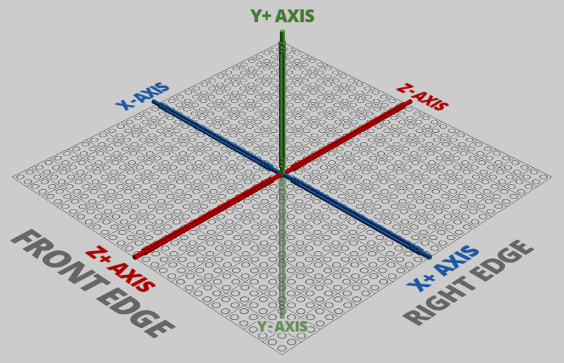
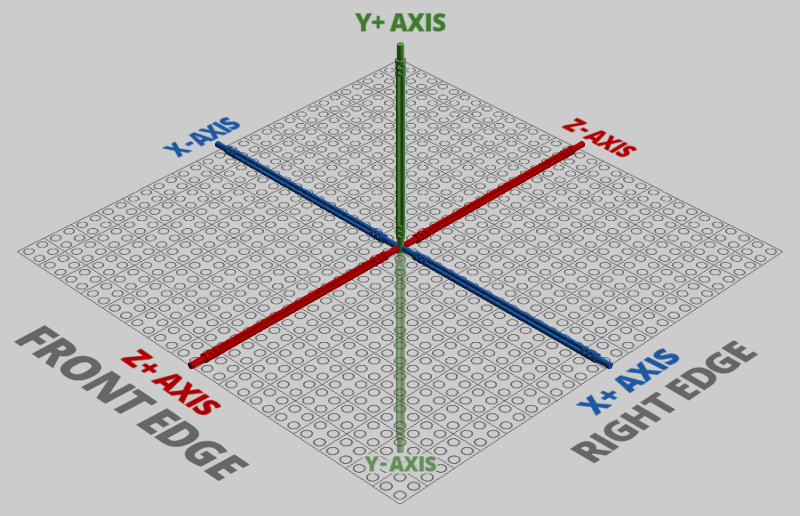

What's LegoToR
LegoToR delivers the core for rendering LEGO Digital Designer scenes including advanced shaders, lights, and geometry with RenderMan
Toy Story 4 © Disney/Pixar
LegoToR delivers the core for rendering LEGO Digital Designer scenes including advanced shaders, lights, and geometry with RenderMan
Inside Out © Disney/Pixar
Now you can get out-of-box production tools straight from Pixar Animation Studios, including materials and light transport... no development required.
Physically based shading allows RenderMan to deliver highly realistic lighting with minimal setup, including full support for multi-bounce ray traced global illumination and ray traced subsurface scattering. Much research and development has gone into making these traditionally expensive effects a production reality. Pixar's first feature film to use this technology was Finding Dory, and now it has matured with great developments in Cars 3, Coco, and Incredibles 2.
Jurassic World: Fallen Kingdom © Universal Pictures
-Equilibrium, user at Eurobricks
Advanced renderer
LegoToR relies on RenderMan rendering technology which has been used in blockbusters such as Toy Story, Jurassic Park, Avatar, and The Lord of the Rings.
RenderMan is a proven rendering solution and delivers high quality output for studios such as Pixar, ILM, Animal Logic and many more. RenderMan has been used to create digital visual effects for Hollywood blockbuster movies such as Beauty and the Beast, The Lion King, Terminator 2: Judgment Day, Toy Story, Jurassic Park, Avatar, Titanic, Star Wars, and The Lord of the Rings. LegoToR now provides you with a solution to render your LDD files with the same power as Hollywood.
Checkpointing
LegoToR can resume interrupted renders via RenderMan, redefining the creative process.


Checkpointing allows the renderer to make repeated passes over the image, refining it a bit more with each pass. While the image will be quite noisy during the initial passes, it is usually sufficient to give an impression of how the final image will look, instead of having to wait for a final frame, allowing reviews and more iterations of your scenes.
Digital Bricks
Discover how LegoToR is helping to reach new heights for photorealistic digital bricks.

RenderMan was the first VFX commercial renderer in the industry to ship with a physically based model for subsurface scattering, a truly accurate model for photorealistic skin based on deep path tracing and albedo controls.
Until now, the implementations available to the VFX industry for these effects have been substantial approximations, which inherently produced errors and artifacts. RenderMan's new subsurface approach significantly increases quality and realism when rendering skin and other soft or delicate materials, which is essential for creating believable characters.
Secondary Passes
RenderMan AOV and LPE passes provide robust workflows for compositing feature animation and VFX.


RenderMan provides elegant methods for breaking visual effects down into secondary passes for compositing, including DeepEXR and Cryptomatte support. With support for both AOVs and Light Path Expressions, RenderMan offers a multitude of ways of writing any element of a render (SSS, Diffuse, Shadows, Z-Depth, Object IDs, Per-Light AOVs, etc.) into many popular formats.
LegoToR is up to 2x overall faster then other solutions, thanks to using RenderMan architecture.
Incredibles 2 © Disney/ Pixar
-pewpewlazerd, user at Reddit
Numbers are compared using LegoToR vs Bluerender
| |
|
||
|---|---|---|---|
| Seamless Integration | ✅ | ✅ | ✅ |
| Fully Open Source technology | ✅ | ❌ | ❌ |
| Latest RenderMan Features | ✅ | ❌ | ❌ |
| Alpha Channel support | ✅ | ❌ | ❌ |
| Advanced Denoiser Technology | ✅ | ❌ | ❌ |
| Logo on studs | ❌ | ✅ | ✅ |
| Support for flex parts | ✅ | ✅ | ✅ |
| Image Based Lighting | ✅ | ❌ | ❌ |
| Path Traced Subsurface Scattering | ✅ | ❌ | ❌ |
| Free of charge | ✅ | ✅ | ✅ |
| Pixar Surface Material System | ✅ | ❌ | ❌ |
| Fully integrated with LDD | ✅ | ✅ | ❌ |
| Secondary Passes (AOV - LPE - Light Groups) | ✅ | ❌ | ❌ |
| RIB Archives | ✅ | ❌ | ❌ |
| 64-bit support | ✅ | ❌ | ❌ |
| Particles | ✅ | ❌ | ❌ |
| Object based lightning | ✅ | ❌ | ❌ |
| Advanced Camera system | ✅ | ❌ | ❌ |
| Brick colors based on colorimetric measurements | ✅ | ❌ | ❌ |
| Unlimited Multi-Threaded Rendering | ✅ | ❌ | ❌ |
| Support for Multiple Integrators | ✅ | ❌ | ❌ |
Here you not only find troubleshooting help, but also get answers, support and tips & tricks for using LegoToR.
Onward © Disney/ Pixar
LegoToR version 0.4.8.1 delivers significant improvements to production pipelines with initial USD support, while also offering new features for look development workflows, enabled by RenderMan’s USD Hydra delegate.
Learn MoreUSD is a technology developed at Pixar Animation Studios to address the challenges of feature film production. In production environments using multiple applications (such as Maya, Katana, and Houdini), USD can enable a new level of reliable, efficient, flexible collaboration, including sharing of animated geometry, materials, and lights. USD also serves as an interchange and augmentation of 3D data which and is used by Apple in their augmented reality systems. USD support is planned or released from vendors like Autodesk, and Nvidia, this new technology will play an increasingly important role across the industry.
I track other applications and formats. An important aspect of LegoToR version 0.4.8.1 has been re-engineering specifically support USD. I understand the power and capabilities of applications and formats such as MLCAD and LDraw, and the strong interest in them. As LegoTor is completely open-source I encourage a fork or pull requests to make that happen.
Yes. LegoToR uses Python and should work on Linux, as does RenderMan. While no Linux version of LDD is available you can use it's library on Linux to render your files. Just grad the Windows version of LDD and extract it. It contains LDD's library.
Pixar has been using and developing various special purpose GPU renderers internally and there is an experimental RenderMan XPU project to combine CPU+GPU computations for faster rendering when powerful GPU processors are available – though it can always fully render with the CPU only if necessary. So far there is no external release date by Pixar yet. Once it is available LegoToR plans to support is as well.
LegoToR is not associated with either Lego or Pixar.
Create an issue in the github repository with OS information, LDD version and at best also add the LXF file and system output.
Limitation is more on LDD itself to create models and on your computer to render. LDD supports approximately 100k parts, but numbers depend on complexity of the parts themselves. As LDD is still a 32bit application it can not handle more then ~2GB of RAM (2GB/2GB Application/Kernel). Having said that LegoToR has no problem in converting for example the UCS Millennium Falcon™ 75192 in approximately 40 seconds on my machine.
A good starting read is at Eurobricks here.
LDD uses a right handed coordinate system. RenderMan is a left handed coordinate system. USD is right handed. Transformations in LDD are standard 3D transformation matrices. Just 4 rows, 3 numbers each and an added 4th column containing just 0, 0, 0, 1.
 LDD Coordinate System:

LDD Coordinate System:
